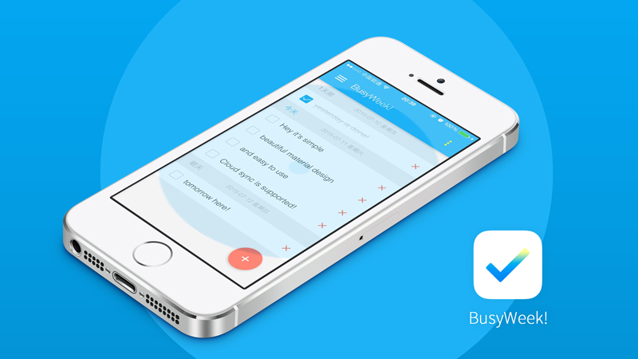

(1) Laser Interferometer System in AFM:
Built a laser interferometer system to measure the deflection of the cantilever. The light from the fiber is reflected back into the fiber and interacts with the light reflected at the end of the fiber. The deflection is characterized by the intensity of the signal. The system is properly optimized with the resolution less than 100pm.
(2) Installation and test of a Dilution Refrigerator:
The refrigerator was manufactured by Leiden and I participated in the installation procedure.
(3) Filter Stages:
Fabricated sixteen sliver-epoxy filters with attenuation more than 100db for frequency above 10kHz. The filters isolate the high-frequency noise and make it possible to cool down the electron temperature to less than 10mk. The filters are mounted on the filter stages produced by oxygen-free copper designed by myself with SolidWorks.
(4) Control Program:
Wrote a control program by LabVIEW to control AFM and acquire real-time measuring data from data acquisition card. All the steps in manipulating an AFM can be controlled in my program including lowering the tips and scanning the samples. The measurement part can monitor the conductivity of the samples.
BusyWeek!

BusyWeek! is a time-based Todo application, available on Web and Apple App Store, which also support the backup and restore to and from the cloud.
It's material-designed, truly responsive across platforms and based on modern web technologies including HTML5, CSS3, Sass and powerful Vue.js.